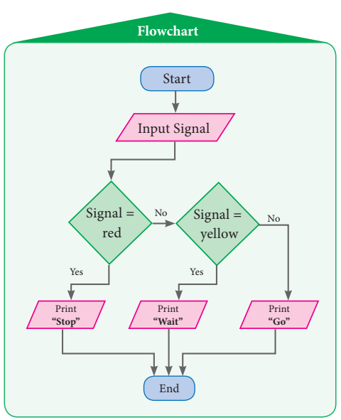
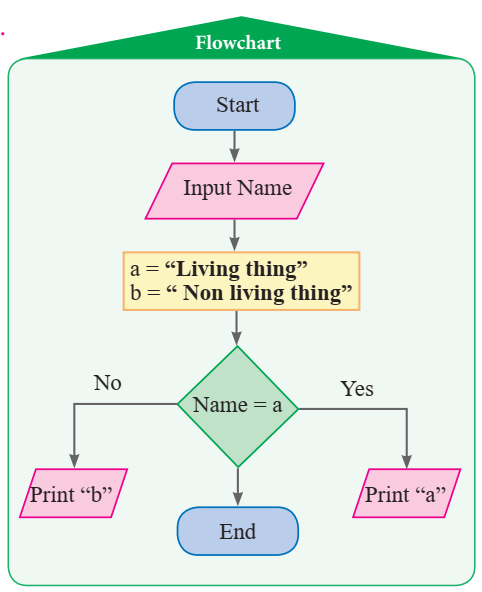
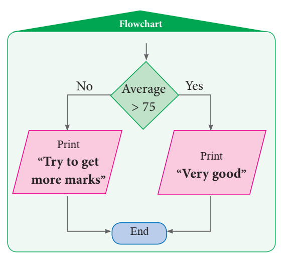
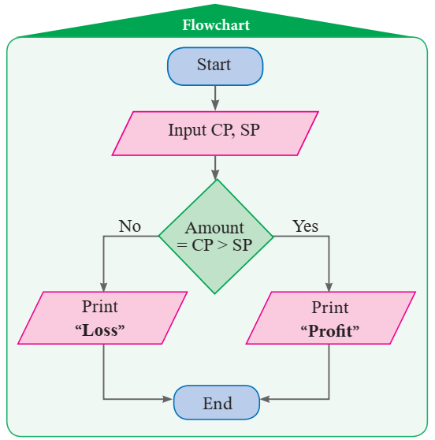

![The description of the flowchart begins ye start with rounded rectangle followed by a flowline arrow mark facing downward to the parallelogram in which insert a ATM card is given followed by a flowline arrow mark facing downward to the rectangle shape in which select your language is written is followed by a flowline arrow mark facing downward to the rectangle shape in which select withdraw money is written followed by a flowline arrow mark facing downward to the rectangle shape in which select savings is written followed by a flowline arrow mark facing downward to the rectangle shape in which Enter PIN number is written followed by a flowline arrow mark facing downward to the rectangle shape in which Enter the amount is written followed by a parallelogram in which collect your cash is given followed by a flowline to arrow mark facing downward to the end The description of the flowchart end](images/image-171.png)
1) (1) e, (2) c, (3) ye, (4) b, (5) d
2)
3)
![The description of the flowchart begins ye start with rounded rectangle followed by a flowline arrow mark facing downward to the parallelogram in which login your web browser is given followed by a flowline arrow mark facing downward to the rectangle shape in which select prepaid or postpaid is written followed by a flowline arrow mark facing downward to the rectangle shape in which Enter mobile number is written followed by a flowline arrow mark facing downward to the rectangle shape in which select your plan is written followed by a flowline arrow mark facing downward to the rectangle shape in which Enter the amount is written followed by a parallelogram in which proceed to recharge is given followed by a flowline to arrow mark facing downward to the end The description of the flowchart end](images/image-172.png)
4)

5)

6) 1)

2)

7)

Glossary
Amount |
கூட்டுத்தொகை |
Angle of rotation |
சுழற்சிக்கோணம் |
Arithmetic Mean |
எண்கணித சராசரி (கூட்டுச் சராசரி) |
Average |
சராசரி |
Beads |
மணிகள் |
Bimodal |
இருமுகடுகள் |
Borrower |
கடன் வாங்குபவர் |
Central tendency |
மையநிலை அளவுகள் (மையப்போக்கு) |
Chord |
நாண் |
Circular ring |
வட்டவளையம் |
Cut outs |
வெட்டுத் துண்டுகள் |
Data |
தரவு |
Decimal |
பத்தின் கூரான |
Decimal point |
தசம புள்ளி |
Dimension |
பரிமாணம் |
Discrete data |
வெவ்வேறான தரவுகள் (தொடர்ச்சியற்ற) |
Dividend |
வகுபடும் எண் |
Divisor |
வகுக்கும் எண் |
Estimation |
மதிப்பிடுதல் |
Factorisation |
காரணிப்படுத்துதல் |
Factors |
காரணிகள் |
Flip Turn |
திருப்பம் |
Frequency |
நிகழ்வெண் |
Graph |
வரைபடம் |
Hundredths |
நூறில் ஒரு பங்கு |
Identity |
முற்றொருமை |
Inequality |
அசமத்தன்மை |
Inequations |
அசமன்பாடுகள் |
Lender |
கடன் அளிப்பவர் |
Line of reflection centre of rotation |
சுழற்சி மையம் |
Median |
இடைநிலை |
Mode |
முகடு |
Monomials |
ஓருறுப்புக்கோவை |
Number line |
எண்கோடு |
Per annum |
ஓர் ஆண்டுக்கு |
Percentage |
சதவீதம் |
Place value |
இடமதிப்பு |
Principal |
அசல் |
Range |
வீச்சு |
Rate of Interest |
வட்டிவிகிதம் |
Replacement set |
பிரதியிடும் கணம் |
Representative value |
தேர்ந்தெடுக்கப்பட்ட மதிப்பு (பிரதிநிதி) |
Simple interest |
தனிவட்டி |
Solution set |
தீர்வு கணம் |
Tally Marks |
நேர்க்கோட்டு குறிகள் |
Tenths |
பத்தாவதாக |
Thousandths |
ஆயிரத்தில் ஒரு பங்கு |
Transformation |
உருமாற்றம் |
Upper Primary Mathematics minus Class 7, Term 3
Text Book Development Team
Reviewer
Dr. R. Ramanujam,
Professor,
Institute of Mathematical Sciences, Taramani, Chennai.
Domain Expert
Dr. C. Annal Deva Priyadarshini,
Assistant Professor, Department of Mathematics,
Madras Christian college,
Chennai.
Content Writers
M. K. Lalitha,
B.T. Assistant GGHSS,
Katpadi, Vellore District.
G.P. Senthilkumar,
B.T. Assistant, PUMS,
Kannankurichi, Salem District.
M. Palaniyappan,
B.T. Assistant,
Sathappa GHSS, Nerkukppai,
Sivagangai District.
ye.K.T. Santhamoorthy,
B.T. Assistant,
GHSS, Kolakkudi,
Thiruvannamalai District.
P. Malarvizhi,
B.T. Assistant,
Chennai High School,
Strahans Road, Pattalam, Chennai.
ye. Ravi,
B.T. Assistant, (Maths)
Government High School,
Ayilam, Vellore District.
Content Reader
Dr. M. P. Jeyaraman,
Assistant Professor,
L.N. Government Arts College,
Ponneri minus 601 204.
EMIS Technology Team
R.M. Satheesh,
State Coordinator Technical,
TN EMIS, Samagra Shiksha.
K.P. Sathya Narayana,
IT Consultant,
TN EMIS, Samagra Shiksha.
R. Arun Maruthi Selvan,
Technical Project Consultant,
TN EMIS, Samagra Shiksha.
Academic Advisor
Dr. PonKumar,
Joint Director (Syllabus),
SCERT, Chennai.
Coordinator
D. Joshua Edison,
Lecturer,
DIET, Kaliyampoondi,
Kanchipuram District.
ICT Coordinator
D. Vasuraj,
PGT and HOD (Maths),
KRM Public School, Chennai.
Art and Design Team
Layout Artist
Jerald Wilson
Artist
Prabhu Raj D.T.M.
Drawing Teacher,
GHS, Manimangalam,
Kanchipuram District.
Inhouse QC
Rajesh Thangappan
Mathan Raj
Adison raj
Coordinator
Ramesh munusamy
Typist
A. Palanivel,
SCERT, Chennai.
M. Sathya,
Perungalathur, Chennai.